投机解码如今几乎是所有托管LLM的默认加速手段，但加速从来不是免费的：草拟时间、校验时间、接受长度这三个变量互相拉扯，四代架构各自只卸掉其中一个瓶颈。
下面这组手绘动画把四代架构的工作原理、无损成立的确切条件，以及数学与代码之外那些从未被评测过的领域讲清楚，并附一套能在单张H100上跑完的上机实验。
每一个你在用的LLM都是一次生成一个token。这叫自回归解码，也是推理的主要瓶颈之一：生成n个token就要跑n次前向传播，而模型本身有几百亿参数。投机解码在2023年被提出（Leviathan等，2023，arxiv.org/abs/2211.17192），思路是让一个轻量的草稿模型先猜出接下来几个token，再由完整的目标模型逐一校验这些草稿，接受或者拒绝。校验后的输出与目标模型具有相同的概率分布（Chen等，2023，arxiv.org/abs/2302.01318），这正是投机解码在理论上无损的原因。
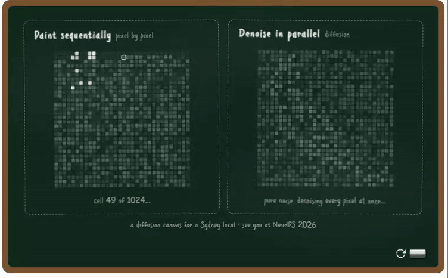
草稿模型仍然一次只草拟一个token。 第一代投机解码靠一个更小的草稿模型给推理提速，但草拟过程本身还是串行的。在视觉生成里扩散模型已经被广泛采用（见题图）：图像是并行生成的，而不是一个像素一个像素地画。那么，能不能让草稿模型用扩散的方式把整块token并行草拟出来，把推理再推快一步？
今天投机解码几乎跑在每一家托管LLM上，解码的速度和质量因此影响到每一个人。前沿实验室在生产里重度依赖它：OpenAI在2026年把GPT-5.6 Luna的价格下调80%，并把这次降价部分归功于重新设计的草稿模型（OpenAI，2026）；Anthropic的fast mode以溢价把同一个Claude Opus模型服务到最高2.5倍速（Anthropic，2026，platform.claude.com/docs/en/build-with-claude/fast-mode）；DeepSeek在其服务引擎里上线DSpark，吞吐提升51%（DeepSeek，2026，arxiv.org/abs/2607.05147）；Kimi K3自带草稿模型（Kimi Team，2026，arxiv.org/abs/2607.24653）。它是理解整个LLM技术栈绕不开的一块。
适合谁读： 只要你知道LLM是一次生成一个token，就具备了读懂这套材料的全部前置知识。内容按递进设计，每一节都建立在前一节之上：
● 它怎么演进。 投机解码如何工作，为什么在理论上无损，四代模型如何层层叠加。
● 它什么时候仍然无损。 介绍LosslessBench，并给出一套可以自己动手跑模型的上机实验。
● 下一步是什么。 加速推理还有哪些值得期待的新方向。
读完你会在NeurIPS与ICML的研究脉络上走完全程：NeurIPS 2018的分块并行解码（Stern等，arxiv.org/abs/1811.03115）、ICML 2023的无损投机解码（Leviathan等，arxiv.org/abs/2211.17192）、NeurIPS 2025的EAGLE-3（Li等，arxiv.org/abs/2503.01840）、ICML 2026的DFlash（Chen等，arxiv.org/abs/2602.06036）、DSpark（DeepSeek，2026）与DFlash 2（Inco AI，2026，inco.ai/blog/dflash2）。
完整术语表见附录。
这一节回答四个问题：为什么投机解码比原始解码快，为什么拒绝采样让它在统计意义上无损，怎么衡量它的收益，以及它在实践里长什么样。
使用投机解码时，一个小的草稿模型先猜出接下来的 γ 个token（通常在3到8之间），目标模型在一次前向传播里把这 γ 个token全部检查一遍，代价与解码一个token差不多。速度来自三个地方：草稿猜得更准，被接受的比例更高；校验调度更聪明，浪费在坏草稿上的算力更少；草拟本身可以并行。
为什么检查 γ 个token的代价只有检查一个的量级？一次一个token地解码，就像用一条船载一位乘客过河：船满载还是空载，过河时间都一样。船就是模型权重。每次前向传播由两部分组成，把完整权重从显存里加载进来，以及随处理token数增长的计算量。对几百亿参数的模型来说，加载远比计算慢，所以推理时间由权重加载决定，而不是由计算量决定。原始解码每运一位乘客（一个token）就要过一次河；投机解码在同一个航次里生成 γ 个token，只付一次显存带宽受限的代价。图1对比了这两种解码方式：
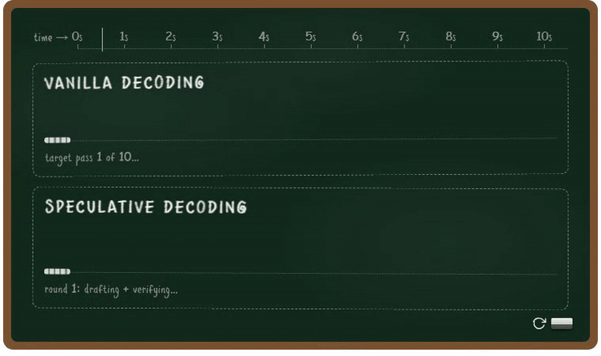
前面讲了投机解码为什么快，那为什么它是无损的？答案是用拒绝采样做校验：目标模型把每一个草稿token与自己的概率比较，逐个接受或拒绝。拒绝采样让无损性与草稿质量无关，即便草稿模型很弱，输出依然服从目标模型自己的分布（Leviathan等，2023，附录A.1）。无损能否成立取决于拒绝采样执行得多严格，第2节会说明它在什么条件下成立、什么条件下失效。图2用一次校验走了一遍流程：
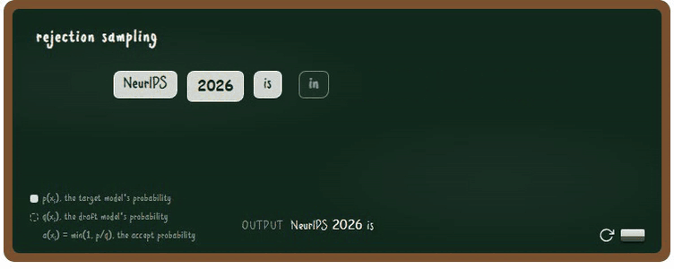
同一条规则用伪代码写出来是：
# p(x): target model's probability for token x
# q(x): draft model's probability for token x
for each draft token x:
accept x with probability
min(1, p(x) / q(x))
# q(x) <= p(x): always accepted
# q(x) > p(x): accepted with probability p(x)/q(x)
on the first rejection:
discard the remaining draft tokens
resample one token from the residual
p′(x) = norm( max(0, p(x) - q(x)) )从统计上看，一个token有两条被输出的路径：直接从草稿里被接受，这部分是被接受的质量；或者在拒绝之后由目标模型重采样，这部分是残差质量。两者相加正好等于目标模型自己的概率：
P(x is emitted) = q(x) * min(1, p(x)/q(x)) # accepted mass = min(p(x), q(x))
+ P(reject) * p′(x) # residual mass = max(0, p(x) - q(x))
= min(p(x), q(x)) + max(0, p(x) - q(x))
= p(x) # same as the target's probability到底快了多少，又该怎么衡量？表1定义了六个指标。其中三个是决定因素：草拟时间、校验时间、接受长度。另外三个，解码加速比、单token延迟和每秒token数，都由这三个因素算出来。
| 指标 | 定义 | 由什么决定 |
|---|---|---|
| 解码加速比 η | η = L(target) / L，相对自回归基线的提速倍数 | 单token延迟L与基线延迟L(target) |
| 单token延迟L | L = (T(draft) + T(verify)) / τ，生成每个token的绝对耗时 | T(draft)、T(verify) 与接受长度 τ |
| T(draft) | 草稿模型提出候选token的耗时 | 草稿模型的规模，以及需要草拟多少token；模型越小草拟越快 |
| T(verify) | 目标模型检查候选token的耗时 | 目标模型的规模，以及每轮校验多少个草稿token |
| 每秒token数 | ≈ 1 / L，用户实际感受到的吞吐 | 单token延迟L |
| 接受长度 τ | 每次校验平均被接受的草稿token数 | 草稿模仿目标的程度：猜得越准，通过校验的token越多 |
表1：投机解码的指标。速度怎么被报告，以及三个决定因素（T(draft)、T(verify) 与接受长度 τ）。
投机解码的速度取决于草拟时间、校验时间与接受长度。四代模型各自卸掉其中一个瓶颈：EAGLE-3拉长接受长度，DFlash压缩草拟时间，DSpark压缩校验时间，DFlash 2再把接受长度往前推一步。下面按顺序讲。
2023年那批工作是拿一个独立的小LLM当草稿，它从零开始猜，而且再多托管一个模型要占显存。Medusa（Cai等，2024，arxiv.org/abs/2401.10774）用挂在目标模型上的额外预测头替换了它；EAGLE（Li等，2024，arxiv.org/abs/2401.15077）又把预测头换成一个解码器层，读取目标模型的隐藏特征并自回归地草拟（图3）。这里重点讲EAGLE-3，因为生产环境里真正跑起来的是它。
更早的EAGLE模型无法通过增加训练数据来提升接受长度。原因是草稿层既要预测目标模型的下一个隐藏特征，也要预测下一个token，这个训练目标迫使模型去复现目标的特征向量，于是草稿把容量花在复制特征上，而不是把token猜得更准。
EAGLE-3（Li等，2025，arxiv.org/abs/2503.01840）用一个「少即是多」的训练目标解决这个问题：丢掉特征预测，直接预测token，同时把来自目标模型低、中、高三层（而不只是顶层）的特征融合起来。但这带来一个新问题：推理时草稿会吃自己的输出，分布逐渐漂移出训练分布，从第二步开始接受率就崩掉。EAGLE-3用training-time test修掉它，训练时让草稿展开多步并消费自己的输出，于是它训练时见到的分布就是推理时见到的分布。
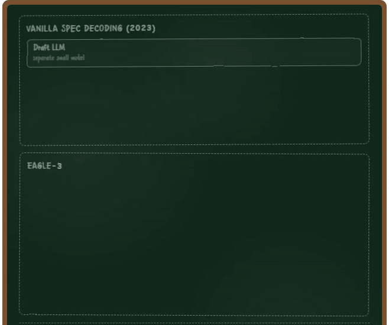
结果是EAGLE-3的接受长度更长：在HumanEval上相对原始解码最高6.5倍加速，比EAGLE-2高约1.4倍，它也是生产框架里采用最广的草稿模型之一，SGLang与vLLM都原生支持。
还有一个瓶颈没解决。小的草稿模型跑得很快，但它仍然一次只提一个token。草拟能不能并行？
DFlash（Chen等，2026，arxiv.org/abs/2602.06036）的关键设计选择是让草拟并行：一次生成整块，而不是一个一个token生成（图4）。
DFlash真正漂亮的地方是它把扩散块草拟这个想法借了过来。在图像和视频生成里，扩散模型从纯噪声出发并行地对每个像素去噪，一次精修整张画布，而不是一个像素一个像素地画（见题图）。文本扩散模型把同一个思路搬了过来（Arriola等，2025，arxiv.org/abs/2503.09573）：用MASK token代替噪声，让模型并行预测每一个被遮蔽的位置。DFlash把它用到草拟上：草稿块一开始就是一排MASK token。
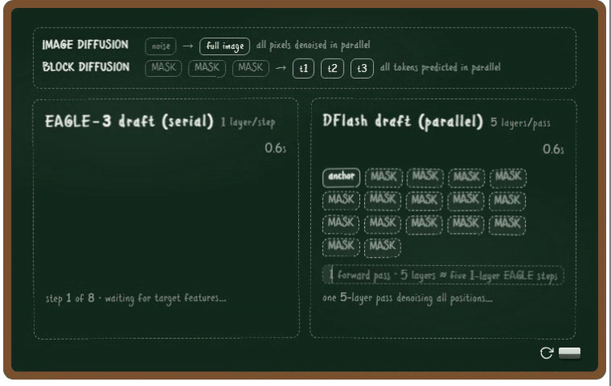
扩散式草拟带来两点好处。
● 整块在一次前向传播里生成，草拟因此变快。 自回归草稿每生成一个token要一次前向传播，草拟 γ 个token就要 γ 次；DFlash一次草拟全部 γ 个位置，代价随块增大保持平坦（图5）。平坦的代价还换来了容量：EAGLE-3为了保持速度只保留一层，而DFlash用得起五层，并且整体仍然更快。五层生成16个token，在草拟代价和接受长度上都胜过单层生成8个token的EAGLE-3。
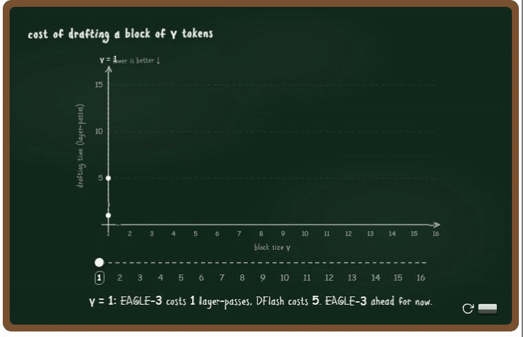
● 用目标模型的上下文特征做条件，草稿因此更准。 只把最后一个token的融合特征喂给草稿有两个问题：它只携带一个位置的信息，而且只在网络底部加入的信号会在更深的层里衰减。DFlash改为把目标模型在每个已验证前缀位置上的特征转成key和value，注入到每个草稿层的KV缓存里（图6），于是整块在填充过程中，每一层都能看到完整上下文。结果是草稿质量更高，接受率也更高。
结果是DFlash把草拟时间压了下来，自回归草拟不再是瓶颈：在一系列模型和任务上取得超过6倍的无损加速，比EAGLE-3最高再高2.5倍。
块内各个位置是独立预测的，草稿token之间互相看不见。那靠近块尾部的接受率衰减怎么处理？
前面的模型都在优化草拟机制，DSpark（DeepSeek，2026，arxiv.org/abs/2607.05147）反过来优化校验机制：只校验那些值得校验的草稿token。它保留并行草拟的主干，另加两个模块（图7）。
● 一个轻量的顺序头恢复块内依赖，让靠后的位置能以靠前的位置为条件。
● 一个置信头估计每个草稿前缀通过校验的可能性，配合一个感知负载的调度器，根据估计的存活概率与服务引擎的吞吐曲线，为每个请求单独设定校验长度。
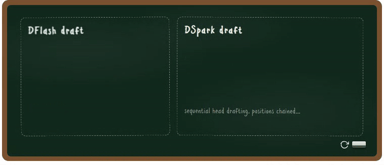
于是DSpark把校验时间压了下来。离线场景下，它的接受长度比当前最强的草稿模型高16% 到31%。在DeepSeek-V4的生产服务栈里部署后，在同等吞吐下比MTP-1生产基线把单用户生成速度提高60% 到85%（DeepSeek，2026，arxiv.org/abs/2607.05147）。DeepSeek把DSpark的checkpoint和DeepSpec一起开源，后者是一个面向投机解码的开源训练仓库。
DSpark压掉了校验时间，它的顺序头也缓解了衰减。但那个头又是一次一个token地走。放弃并行草拟换这个收益，值得吗？
DSpark试图用一个顺序token头处理接受率衰减，但DFlash 2（Inco，2026，inco.ai/blog/dflash2）主张草拟应该保持并行：它用并行选择器替换掉DSpark的顺序头。理由就是代价差距：顺序头要在每个位置重新预测一个完整的词表分布，需要7780万参数、付出9.6% 的延迟；而选择器只用200万参数和0.6% 的延迟就完成了同样的工作。
并行选择之所以可行，是因为正确的token通常已经在候选列表里了。拿一个已验证前缀「The fastest way to」和四个被遮蔽的位置举例。每个位置的短候选列表里都包含目标模型会选的那个token，但独立地在每个位置取top候选会得到「get to to school」：相邻两个位置选了同一个词，句子就断了。而通顺的「get to school quickly」一直躺在这些列表里。Inco量化了这件事的价值：如果有一个完美的判断者总能从前16个候选里挑对，接受长度会从4.27跳到6.79。缺的从来不是token，缺的是判断。真正要做的是选择，而选择可以并行（图8）。
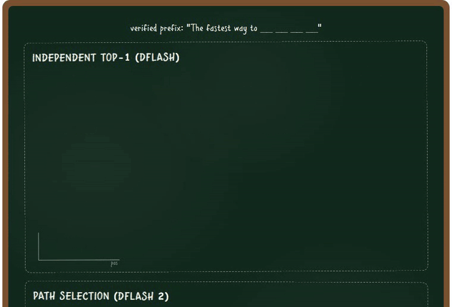
DFlash 2用两个新增模块做到这一点。
● 路径选择器挑出一条连贯序列。 它给每一对相邻候选打分：草稿模型自己对候选的logit，加上一个兼容性项，后者把前一个token和候选token嵌入成256维的紧凑向量，并在一个上下文门控下做匹配。从最后一个已验证token出发走分数最高的那条路径，就替代了各位置独立的猜测，代价是新增200万参数和0.6% 延迟。
● 两抽头卷积保持邻居一致。 它插在每个注意力和前馈子层的前后，把每个位置与前一个位置混合，第一个位置则读取最后一个已验证token。注意力负责长程上下文，卷积负责块内的局部一致性。只往回看一个位置就能拿回十层额外网络的大部分收益：块尾的衰减本来就是个局部问题，用局部手段解决就够了。
可以看出，DFlash 2把接受长度抬了起来：在Qwen3.5-4B上每次校验的接受token数从4.92升到5.97，比DFlash多产出21%，只多1.3% 延迟；在Qwen3.8-27B上相对自回归解码取得2.7倍到3.4倍吞吐（Inco，2026，inco.ai/blog/dflash2）。
四代投机解码架构之后，你有没有一个可能成为下一个SOTA的想法？
四个模型都介绍完了，现在可以把这场比赛完整跑一遍。图9中五个模型在同一个目标模型上解码同一句话。
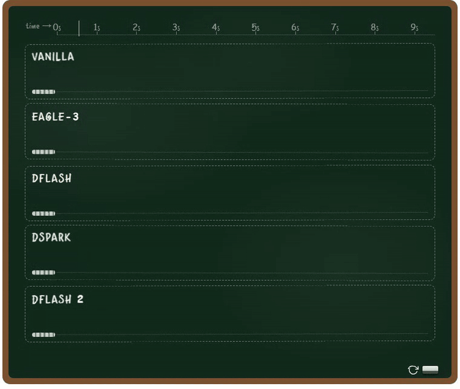
表2到表4汇总了三个目标模型上报告的接受长度，并给出每个数字背后的公开草稿模型，方便复现。
| 方法 | τ | 相对基线 | 草稿模型 |
|---|---|---|---|
| EAGLE-3 | 2.66 | 基线 | deepseek-ai/eagle3_qwen3_8b_ttt7 |
| DFlash | 3.11 | +17% | deepseek-ai/dflash_qwen3_8b_block7 |
| DSpark | 3.72 | +40% | deepseek-ai/dspark_qwen3_8b_block7 |
| DFlash 2 | 无 | 无 | 无 |
表2：Qwen3-8B。τ 是每次校验平均被接受的token数，「相对基线」是相对EAGLE-3的提升。数据来源：DeepSpec，MT-Bench，三个草稿器都在同样的数据上训练。
| 方法 | τ | 相对基线 | 草稿模型 |
|---|---|---|---|
| EAGLE-3 | 无 | 无 | yuyijiong/Qwen3.5-4B-Eagle3（社区） |
| DFlash | 4.92 | 基线 | z-lab/Qwen3.5-4B-DFlash |
| DSpark | 5.49 | +12% | 未开源 |
| DFlash 2 | 5.97 | +21% | 未开源 |
表3：Qwen3.5-4B。数据来源：Inco博客表3，温度1下五个基准的平均值。Inco没有在这个模型上评测EAGLE-3，社区草稿器是在另一套测试框架上自报的数字（三个基准、自己的采样设置），因此不可比，基线改用DFlash。
| 方法 | τ | 相对基线 | 草稿模型 |
|---|---|---|---|
| EAGLE-3 | 无 | 无 | 无 |
| DFlash | 无 | 无 | kstoyanov99/Qwen3.8-27B-Dflash（社区） |
| DSpark | 3.62 | 基线 | RadixArk/Qwen3.8-27B-DSpark（社区） |
| DFlash 2 | 4.80 | +33% | incoai/Qwen3.8-27B-DFlash2 |
表4：Qwen3.8-27B。没有报告EAGLE-3或DFlash的结果，基线改用DSpark。数据来源：Inco博客表4，五个基准的平均值，块大小8。
四个模型今天都已进入生产。从2025年3月起，EAGLE-3草稿头随Llama、Qwen与DeepSeek V3发布；到2026年春天，DFlash已经接入SGLang、vLLM、TensorRT-LLM与llama.cpp，NVIDIA报告它在Blackwell GPU上带来最高15倍吞吐（NVIDIA，2026）。仅DFlash一个项目在七个月内被下载超过350万次。到2026年中，模型厂商开始随模型一起发布官方草稿器：Meta、Poolside与NVIDIA为DFlash提供草稿器（Inco，2026），Red Hat为DSpark提供草稿器（RedHatAI，2026），2026年7月开源的Kimi K3则自带在后期训练阶段训出的speculator（Kimi Team，2026，arxiv.org/abs/2607.24653）。
什么时候它帮不上忙。 投机解码不是免费的。草稿模型要占用额外显存，在内存或显存本就紧张的机器上，多托管一个模型的开销可能超过它省下的时间。每个周期都要先付草拟的代价，如果草稿猜得很差、接受率一直很低，加速比可能掉到1倍以下。在服务负载很高时，GPU已经被批处理打满，没有多余算力留给投机，引擎会在高并发下关掉它。
到这里，投机解码如何工作、如何演进已经讲完。下一节讨论它在什么条件下仍然无损。
上一节讲的是投机解码为什么能无损地加速。这一节讨论它在什么条件下成立、什么条件下不成立：论文里的无损、部署中的无损，以及一个把评测铺到数学与代码之外的案例LosslessBench。
即使在最早的论文里，无损也不是无条件的。EAGLE-3只在温度0下与Medusa做过对比，而放宽接受规则的变体已经不再无损。原因在于Medusa这类方法的无损与否取决于温度，也取决于接受规则有多严格：
● 温度为0时解码是确定性的：目标模型选出概率最高的下一个token，草稿token只有在完全匹配时才被接受，因此无损。
● 温度为1时解码是随机的：同一个位置可以有好几个合法答案。Medusa这类方法会接受所有超过目标概率阈值的草稿token，于是答案的组合方式跟着草稿的偏好走，而不是跟着目标的偏好走。输出分布因此发生偏移，不再无损（Cai等，2024，arxiv.org/abs/2401.10774）。
拿一个有两个合法续写的提示词为例：「The best pet is a ___」。假设目标模型给猫和狗各0.5的概率，而草稿模型更偏好狗：
● 拒绝采样：草稿有80% 的时间提出狗，但目标模型只接受其中8分之5的提议（p/q = 0.5/0.8），其余的重新采样，于是狗最终仍然占50%。
● 放宽的规则：每一个超过阈值的狗提议都被接受，输出因此倒向草稿的偏好，最好的宠物以0.8的概率变成狗。见图10。
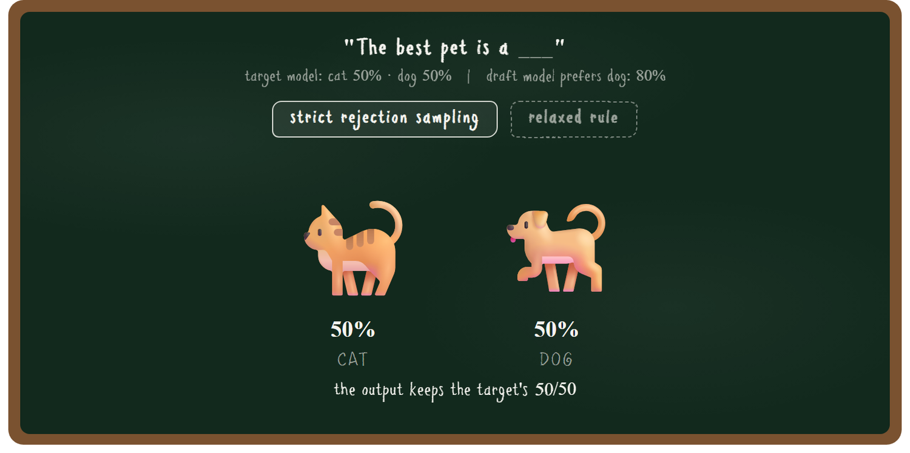
无损还取决于校验是怎么调度的。设计得不好的调度器会引入选择偏差：接受率上去了，输出分布却已经偏移，推理也就不再无损。说得具体一些，调度器要决定第k个草稿token是否参与校验，而这个决定只能依赖位置1到k减1的前缀。如果草稿在位置k提出token A、在位置k加1提出token B，调度器不能拿B来决定要不要校验A（见图11的例子）。
DSpark（DeepSeek，2026，arxiv.org/abs/2607.05147）差一点违反这条非预期规则。此前所有方法都依赖这个前提来支撑自己的无损结论，但没有一个方法去检验前提改变之后证明是否还成立：
1 前提。 前面提到，无损的投机解码要求非预期准入：判断位置k是否需要校验时，只能使用1到k减1的前缀。
2 DSpark调度器的问题。 它按通过校验的估计概率给候选草稿token排序，然后逐个准入并更新期望吞吐。用前一个token k去给token k加1打分是很普通的做法，问题出在DSpark是对整个草稿块联合调度的：它决定准入token k时可能依赖token k加1的分数，而这个分数又是由被提出的token k算出来的。于是token k的准入决定间接依赖了k本身，违反非预期准入，论文里把它称为选择偏差（第3.2.2节，反例见附录A）。
3 DSpark的修复。 一旦期望吞吐开始下降就停止搜索。这样截断决定只依赖到目前为止处理过的前缀，选择偏差随之消失。
放宽的接受规则或者偷看式调度都会让输出分布偏移。那么在部署中，无损还取决于什么？
生产环境里有大量用户可以调整的配置，其中一些直接决定解码是否仍然无损。两大主流引擎是这样划分的：
● SGLang默认保持严格校验：它的接受阈值出厂就是1.0（SGLang文档，docs.sglang.ai/advanced_features/speculative_decoding.html）。用户可以把它调低以更激进地接受token，一旦这样用质量换速度，解码就不再无损。
● vLLM把无损拆成三层（vLLM文档，docs.vllm.ai/en/latest/features/speculative_decoding）：第一层是理论无损，它只到硬件数值精度的极限为止；第二层是算法无损，由拒绝采样器的收敛测试来验证；第三层是输出稳定性，vLLM不做承诺。前两层有论文证明与引擎测试兜底，第三层没有：批量大小的一次简单改动就可能改变logprob，从而移动输出分布。
DSpark是具体的例子。DeepSeek把它部署到生产时，调度器暴露了两处与现实基础设施的冲突（DeepSeek，2026，第5.2节），两处都必须重新设计才能保住无损：
1 算法假设硬件容量曲线是平滑的，但真实GPU的吞吐是锯齿状的。修复办法是去掉提前停止，在整条锯齿曲线上搜索。
2 算法要决定每一步校验多少个草稿token，但服务引擎需要固定的批量大小。修复办法是异步调度，用两步之前的置信度预测来设定批量大小。这同时让决策看不到当前token，于是第一项修复里更大的搜索范围依然保持无损。
最后，生产栈本身很复杂，它对推理的加速远不止投机解码：权重要量化（有损），KV缓存要压缩（有损），服务系统还要在上面叠加感知KV缓存的路由与预填充解码分离。这么多因素叠在一起，整个部署是否仍然无损就很难判断了。
假设一个部署把上面每一点都做对了：严格阈值、非预期调度器、针对每个引擎约束的重新设计。那又要怎么验证它在各种不同领域里仍然服务于终端用户的目标？无损的证据只覆盖被测试过的领域。
当前最强的投机解码方法全都在这么几类任务上评测：代码、对话和数学。EAGLE-3、DFlash与DSpark在GSM8K、MATH-500、AIME25、HumanEval、MBPP、LiveCodeBench、MT-Bench、Alpaca与Arena-Hard上报告接受长度和加速比，DeepSpec用的也是同样这九个基准（表5）。这些基准只覆盖真实任务的一小片，在这之外，无损的经验证据是空白的。图12给出了OpenRouter真实流量里的29种任务类型（OpenRouter，2026，openrouter.ai/rankings）：被测试过的领域只占token用量的17%，剩下的83% 从未被测量过。
| 方法 | 数学 | 代码 | 对话 / 指令 | 其他 |
|---|---|---|---|---|
| EAGLE-3（2025） | GSM8K | HumanEval | MT-Bench、Alpaca | CNN/Daily Mail（摘要） |
| DFlash（2026） | GSM8K、MATH-500、AIME25 | HumanEval、MBPP、LiveCodeBench | MT-Bench、Alpaca | 无 |
| DSpark（2026） | GSM8K、MATH-500、AIME25 | HumanEval、MBPP、LiveCodeBench | MT-Bench、Alpaca、Arena-Hard | DeepSeek-V4线上流量（只测速度） |
| DeepSpec测试框架 | gsm8k、math500、aime25 | humaneval、mbpp、livecodebench | mt-bench、alpaca、arena-hard-v2 | 无 |
表5：无损在哪里被测量过。各行是各篇论文实验部分用到的评测数据集。
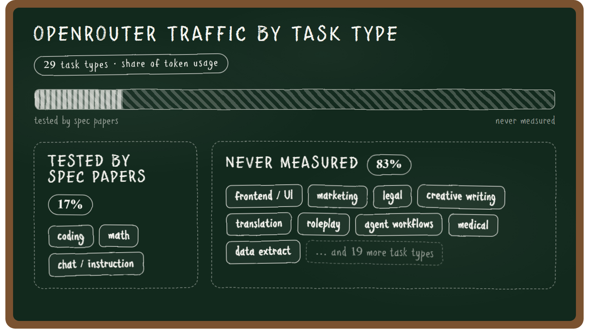
那么，在这83% 从未被测量过的领域和任务上，无损还成立吗？
前面几节讲的是理论无损与算法无损。为了在代码和数学之外的领域测量投机解码与推理加速，作者构建了LosslessBench（lilyzh.ng/writing/losslessbench）。
LosslessBench（huggingface.co/datasets/lilyzhng/lossless_bench）覆盖五个领域：代码、智能体工作流、创意写作、安全护栏与前端设计。见图14，每条轴使用该领域自己的基准与指标：
● 前端：OpenDesign。每个页面判两次，一个GPT-4o视觉评委从对齐、美观和结构三方面给渲染截图打分，同时一个浏览器智能体点击每一个组件，判断页面是否真的能用。
● 创意写作：EQ-Bench长文得分，在多章节创意写作上评判。
● 护栏：XSTest，在刻意贴近决策边界的安全与不安全提示上测分类准确率。
● 代码：Terminal-Bench通过率。
● 智能体工作流：tau3-bench的长程智能体任务，测动作匹配率。
这些论文里的基准都是简单的单轮任务，比如小学算术和函数级代码，只覆盖了模型在真实使用中被要求做的事情的一小片。这正是LosslessBench要补上五个领域的原因。
第一节已经说明，报告的接受长度本身就是一种隐式的token级发散度量，因此它天然适合作为这五个新领域的探针（图13）。作为一次自检，测试框架复现了DFlash在自己基准上公布的数字：GSM8K上5.32对论文的5.98，HumanEval上5.96对论文的5.52。而在LosslessBench的五条轴上，接受长度从5.24掉到1.84，草稿在论文从未测量过的领域漂移得最远。前端设计是个例外：它的接受长度保持很高，生成的页面却是坏的（图15），因为接受长度衡量的是草稿与目标的一致程度，不是输出质量。
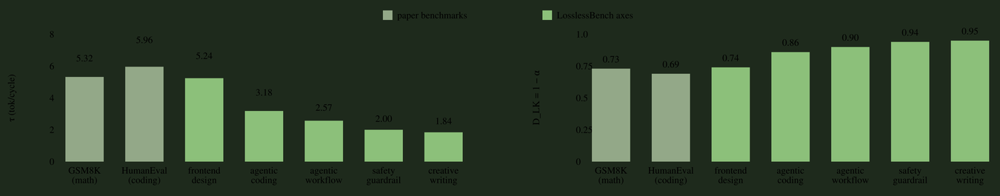
那么这种发散会不会转化成人能感受到的任务质量损失？这正是图14要检验的。
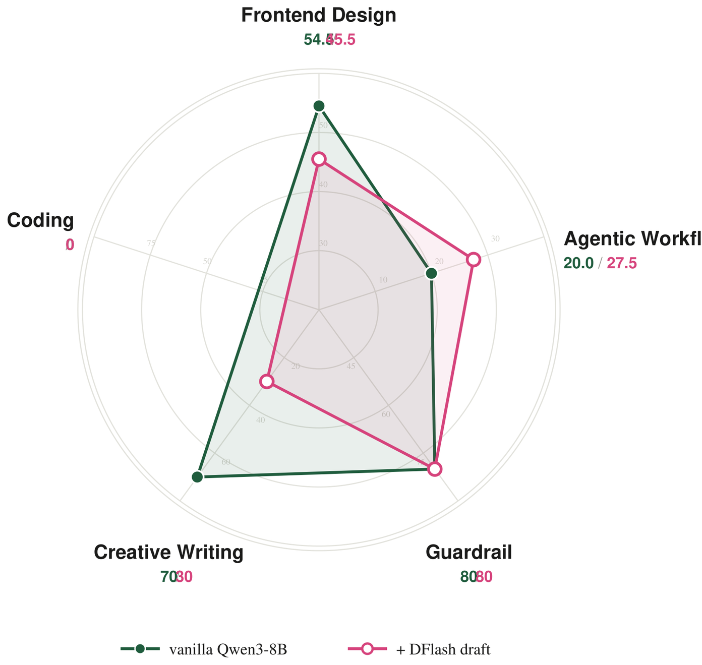
用DFlash草稿时，前端设计从54.5掉到45.5，创意写作从70掉到30，护栏保持在80，智能体工作流反而从20.0升到27.5。两次运行用的是同一个Qwen3-8B、同一个分布，所以这点提升来自运行过程中恰好走上的那条路径。贪心解码下，一个微小的数值差异就会让某个token翻面；在智能体循环里，这一次翻面可能变成一次额外的工具调用，而工具返回的结果会改变之后每一轮。在十个tau3零售任务上，加速版更频繁地走了这个分支：每一轮思考更长（416词对261词），调用的工具更多（76次对54次），多出来的工具结果把它推到了更高的分数。
评测可以自己跑。 任选一个领域，直接把任务跑起来：
● 前端设计：https://neurips2026-speculative-decoding.vercel.app/demo/compare_frontend.html
● 智能体工作流：https://neurips2026-speculative-decoding.vercel.app/demo/compare_taubench.html
● 安全护栏：https://neurips2026-speculative-decoding.vercel.app/demo/compare_guardrail.html
● 创意写作：https://neurips2026-speculative-decoding.vercel.app/demo/compare_creative.html
● 智能体代码：https://neurips2026-speculative-decoding.vercel.app/demo/compare_coding.html
仔细看图15：四个模型生成的页面并不相同，连token数都不一样。在日历这个任务上，原始模型生成了2683个token，加速模型在2606到3048之间。DFlash的逐token解码速度最快（每秒341对143个token），而它生成的日历页面肉眼可见地坏掉了。
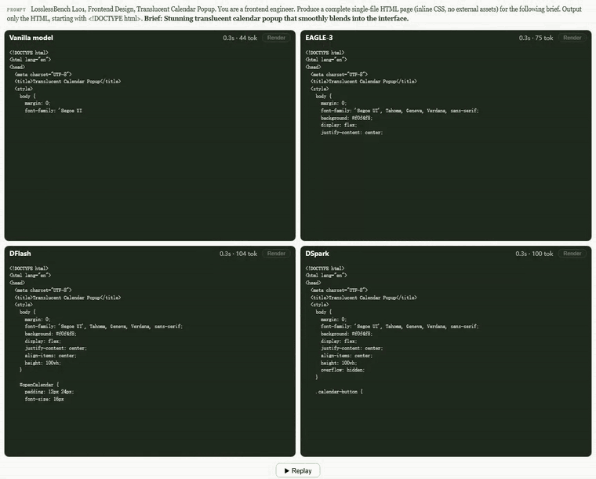
图16是创意写作任务上的评测结果：EAGLE-3与DSpark写出了完全相同的故事，原始模型和DFlash则从同一句开头各自走上不同的轨迹，于是留下三个不同的故事可供评判：
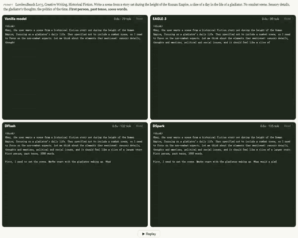
| 故事 | 指令遵循 | 拉丁语词汇 | 写作风格 |
|---|---|---|---|
| 原始模型 · 7/10 | 979词。在进入打斗时收尾，接近违反「不得战斗」的规则。 | 正确、克制。 | 感官细节最强，有具名角色。结尾退回到一段泛泛的自由独白。 |
| EAGLE-3 / DSpark · 6/10 | 最好。998词，所有约束都满足。 | 正确、稀疏。 | 作为小说最弱。同一个论点重复三遍。没有具名角色。把政治讲出来，而不是演出来。 |
| DFlash · 7.5/10 | 最差。1092词，超出9%，还生造了一个sacrae bell。 | 不准确，装饰性。 | 结构最好。完整的从黎明到夜晚的弧线，一个有背景故事的配角，结尾意象最强。 |
表6：三个不同的角斗士故事，按简报自己的约束评判。同一个目标模型、贪心解码：差异来自轨迹发散，而不是模型不同。
总体上DFlash胜出。小说的生命在于结构与人物，其次才是合规，而DFlash是唯一一个给出完整一天、一个能被记住的配角，以及一个真正落地的结尾意象的版本。它的违规只是校对级别的修补。EAGLE-3和DSpark遵守了每一条规则，写出了最先被忘掉的那一篇。
有意思的是，DFlash写出的日历页面最差，故事却最好。为什么EAGLE-3与DSpark在写作和前端代码上表现一致，DFlash却独自偏离？EAGLE-3与DSpark共享DeepSpec的训练数据，提出的token也相似；DFlash在训练数据、块大小和服务路径上都不同，因此这里无法排除确切原因，但最可能来自训练数据的差异。
这一节是动手部分。一份Jupyter notebook走查（github.com/lilyzhng/2026_NeurIPS_Education/blob/main/submission/teaching_materials/lab/lab_walkthrough.ipynb）把每个阶段和结果都嵌在一起，可以先读完整个实验再花GPU时间。
去哪里弄GPU。 任何H100或A100都可以。如果没有，注册一个Modal（modal.com）账号可以拿到30美元免费额度，足够跑完整个实验（H100大约每小时4美元，跑一个下午用掉8到12美元）。
这一节把同一个模型部署两次，一次是原始模型，一次带草稿器，然后在自己的GPU上测量推理加速。
checkpoint来自DeepSpec（github.com/deepseek-ai/DeepSpec），它在同一个目标模型Qwen3-8B上发布了EAGLE-3、DFlash与DSpark的草稿器。服务引擎用vLLM。第一次部署会冷启动（构建镜像加16GB权重下载，约10分钟），之后有缓存，实验会更快。
pip install modal && modal setup # one-time account link
git clone https://github.com/lilyzhng/2026_NeurIPS_Education && cd 2026_NeurIPS_Education/submission/teaching_materials/lab
SPEC_MODE=vanilla modal deploy modal_vllm_serve.py # prints your server URL这个脚本会固定镜像，把模型权重缓存到卷里只下载一次，并把服务暴露在一个公开URL上。用完执行modal app stop neurips-spec-lab释放GPU。
先服务原始模型：
vllm serve Qwen/Qwen3-8B --port 8000发一个提示词并测量生成速度（脚本是measure_decoding_speed.py）。然后把服务换成DeepSpec的DSpark草稿器（在Modal上是SPEC_MODE=dspark modal deploy modal_vllm_serve.py），再跑一遍同样的基准：
vllm serve Qwen/Qwen3-8B --port 8000 --speculative-config \
'{"model": "deepseek-ai/dspark_qwen3_8b_block7", "method": "dspark", "num_speculative_tokens": 7}'在单张H100上跑5次，加速比是稳定的（均值 ± 标准差，图17）：
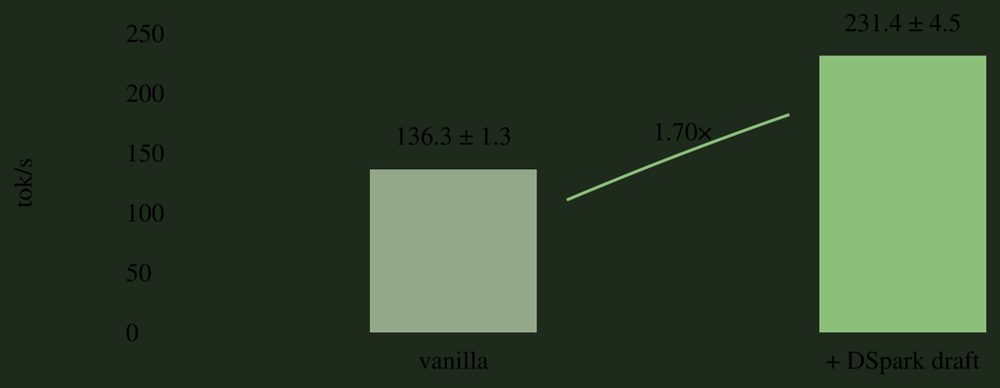
vLLM不会直接报告接受长度或单token延迟，两者都来自真实测量：延迟来自上面的吞吐，τ 来自服务器的/metrics计数器（提出5180个草稿token，每轮7个，约等于在2606个生成token上做了740轮校验）。计算过程如下：
L(target) = 1 / 136.3 tok/s ≈ 7.3 ms # latency of the target (vanilla) model, per token
L(dspark) = 1 / 231.4 tok/s ≈ 4.3 ms # latency with the DSpark draft, per token
τ ≈ 3.5 # acceptance length
T(draft) + T(verify) = L(dspark) × τ ≈ 15.1 ms # cost of one draft+verify pass
η = L(target) / L(dspark) ≈ 1.70x # speedupSGLang的--speculative-accept-threshold-single出厂值是1.0，此时拒绝采样与目标模型一致。把它调低会让草稿token更容易被接受，用无损换速度。作者在LosslessBench的前端设计任务上测了1.0到0.4这几档（L101，与图15同一个日历弹窗提示词，温度1），每一档都重新生成页面并记录接受长度与解码速度（图18）。在温度0下阈值不起作用：每一档返回的页面都逐字节相同。
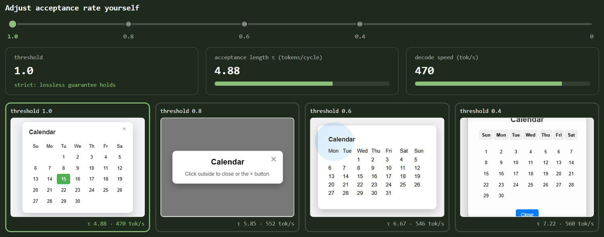
阈值等于1.0时校验器执行拒绝采样：无论草稿提出什么，页面都服从目标模型的分布。低于1.0，无损的免费午餐就没了：任何目标概率超过阈值的草稿token都会被直接接受而不重采样，输出因此向草稿漂移。τ 从4.9爬到7.2，多出48% 的、草稿偏好的token混了进来。这个提示词要求的是一个出色的半透明日历弹窗，生成出来的页面究竟是好了还是坏了，用眼睛判断即可。
这一节让四个部署在同一条提示词上比赛：原始模型对阵EAGLE-3、DFlash与DSpark，全部跑在H100上。目的是让读者感受推理加速在真实任务上究竟做了什么。
SPEC_MODE=eagle3 modal deploy modal_vllm_serve.py
SPEC_MODE=dspark modal deploy modal_vllm_serve.py
modal run modal_dflash_offline.py # DFlash, see note below
python3 build_race_demo.py # assembles the demo from your outputs这几条命令复现的就是第2.3节里的两个实时演示（图15与图16）。
注意：在稳定版0.28.0里vllm serve跑DFlash会崩，只有离线的LLM() 路径进了CI，所以DFlash走modal_dflash_offline.py。它用的草稿器也是z-lab的发布版，而不是DeepSpec的。
用LosslessBench的L101任务：「一个出色的、能平滑融入界面的半透明日历弹窗」。
python3 generate_frontend_task.py --url <your-url> --label vanilla因为用的是贪心解码，无损给出了一个很具体的预测：带草稿器的版本应该逐字节复现原始模型的HTML。而实际测到的结果并不是这样。
在原始服务器和DSpark服务器上各跑一次，然后比较两个HTML文件：
| 对比 | 相同前缀 | 首次分歧 | 最终长度 |
|---|---|---|---|
| 原始模型vs DSpark | 8299字符（页面的76%） | `transition: color 0.2s` 变成 `0.3s` | 10924对10535字符 |
表7：同一个L101页面在原始模型与DSpark下的贪心逐字节对比。
拒绝采样的证明在算法层面依然成立，它假设两条路径计算出的目标概率相同。但在实践中，投机路径跑的是不同的kernel，logits在浮点精度内发生偏移，一个几乎平局的token（这里是0.2s与0.3s）就倒向了另一边。两个页面都能渲染，也都满足简报要求，但它们是不同的页面：输出稳定性是另一个层次的问题，没有任何引擎对此做出承诺（见第2.2节）。
输出随领域变化，速度也一样。用race_domains.py在代码、创意和前端三种提示词上分别测每种解码方式：
| 领域 | 原始模型 | DSpark | EAGLE-3 | DFlash |
|---|---|---|---|---|
| 代码 | 138.1 | 311.9（2.3倍） | 158.8（1.15倍） | 311.3（2.25倍） |
| 创意 | 138.2 | 416.7（3.0倍） | 229.5（1.66倍） | 265.6（1.92倍） |
| 前端 | 137.6 | 333.1（2.4倍） | 208.2（1.51倍） | 274.0（1.99倍） |
表8：按领域划分的解码速度。同一份草稿在不同文本上买到不同的加速比。
如表8所示，原始模型在每个领域上都是每秒约138个token。草稿器的速度随领域变化，因为接受率取决于草稿对这类文本猜得准不准：DSpark在创意写作上做到3.0倍，在代码上2.3倍。在这套测试框架里，DSpark以 τ 3.5领先，DFlash以 τ 2.2到2.5紧随其后，EAGLE-3以 τ 1.3落后。
接下来是一道开放练习：换成没人测量过的领域（OpenRouter剩下的那83%）里的提示词，重跑这场竞速，并把三个数字放在一起报告：接受率、任务正确性和领域覆盖率。如果想要一套现成的提示词集合，LosslessBench在完整的OpenRouter分布上采样了100个任务。
这一节看两个新方向：多模态投机解码，以及从投机token走向投机工具调用。
上面所有方法都针对纯语言模型，但越来越多的解码负载是多模态的。一个计算机使用型智能体在轨迹的每一步都要读一张截图，无论是浏览网页还是检查自己写的前端代码，聊天里还要解析用户上传的文档、图表和视频。
那么问题来了：投机解码能不能同样用在多模态语言模型上？
答案是目前还不能，还没有任何一个多模态投机解码方法进入主流采用。vLLM在v0.11.1里合并了第一个面向EAGLE-3的VLM支持，但只支持Qwen2.5-VL，其他投机路径仍然拒绝多模态模型；SGLang的草稿训练框架SpecForge把VLM集成列为路线图（SpecForge，2025，lmsys.org/blog/2025-07-25-spec-forge）。
在研究侧，第一个VLM投机解码基准MMSpec在十种算法上测了600多个样本（MMSpec，2026，arxiv.org/abs/2603.14989），主要发现是为语言模型设计的投机解码在多模态输入上可能退化，因为草稿模型的视觉能力比目标模型弱得多。它表现为两种形式：
● 纯文本草稿器完全看不到图像。 标准草稿器是一个小语言模型，没有任何处理视觉输入的组件（MASSV，2025，arxiv.org/abs/2505.10526）。
● 换成小VLM也补不上这个差距。 ViSpec的假设是，大VLM会逐层过滤掉冗余的图像信息，小模型很难做到同样的事，因此随着草稿模型变小，视觉能力退化得不成比例（ViSpec，NeurIPS 2025）。
早期结果收敛到同一个设计选择：把目标模型的视觉表示共享给草稿器，而不是从头把视觉能力训练进一个小模型。MASSV用轻量投影器把目标模型自己的视觉编码器接到草稿模型上，并在目标模型的回答上做蒸馏，相比纯文本草拟最多取得30% 更长的接受长度和1.46倍的端到端加速（MASSV，2025）。ViSpec训练了一个具备视觉感知的草稿器，报告了VLM解码上第一批可观的加速（ViSpec，NeurIPS 2025）。
到目前为止投机解码都作用在token上，而同一套先预测再校验的思路可以往上抬一层，用到智能体的工具调用上。对智能体来说，真正昂贵的单位是工具调用：一次子LLM查询或者一次API请求要花好几秒，而发起它的代码那时还在生成中。
早期工作已经开始把这件事形式化。Speculative Interaction Agents把投机工具调用定义为削减首token时间的手段（Hooper等，2026，arxiv.org/abs/2605.13360），Act While Thinking则根据推理轨迹里出现的模式提前执行预测出的工具调用（Ji等，2026，arxiv.org/abs/2603.18897）。目前还缺一个共同的基准：每篇论文都在自己的设置上评测，要么借用OOLONG（2025，arxiv.org/abs/2511.02817），要么自建任务集。
投机式程序化工具调用是一个具体实例（Zhang，2026，alexzhang13.github.io/blog/2026/spec-ptc）。模型还在写代码时，第二个解释器就运行这段尚不完整的程序，只要某次工具调用的输入已经确定就提前发起。等到代码真正执行时，能匹配上的提前调用直接返回已经存好的结果，匹配不上的就被丢弃并重新执行。猜错一次的代价只是那次被浪费的提前发起。在Qwen3-30B与OOLONG上，这带来1到1.2倍的端到端加速。
如果智能体的负载继续增长，这个方向很可能会重走token级投机解码的路径：更好的推测策略，把接受率当作一等指标，以及一个统一的基准来规范各家宣称的加速比。
正文之外还有两个发现值得单独拿出来说。
作者在一个厂商组装起来的加速栈下（fp4量化、投机解码、KV路由、预填充解码分离）发现了前端设计评测上的一处明显缺口：同一个GLM 5.2模型掉了5.6分，从76.9降到71.2（图A2）。设计类输出是开放式的，草稿很难预测，而且它根本不在这类投机解码基准里。但前端与UI任务在OpenRouter的任务用量里占比不小（见图12）。换句话说，用户如果用的是只针对代码和数学调过的投机模型，拿到的就是打折的性能。另外四个领域没有出现明显缺口。这个栈里的元凶是量化，所以这次测量本身说明不了投机解码单独的功过。
加速正在一步步从服务层搬进前沿实验室。DeepSeek-V3把FP8推进到预训练阶段（DeepSeek-AI，2024，arxiv.org/abs/2412.19437）。OpenAI用量化感知训练发布了gpt-oss的MXFP4权重（OpenAI，2025，arxiv.org/abs/2508.10925）。K2-Thinking的所有基准数字都按INT4报告，量化模型就是官方模型。Kimi K3的草稿模型是后期训练的一部分，并且在模型离开实验室之前就已验证过（Kimi Team，2026，arxiv.org/abs/2607.24653）。
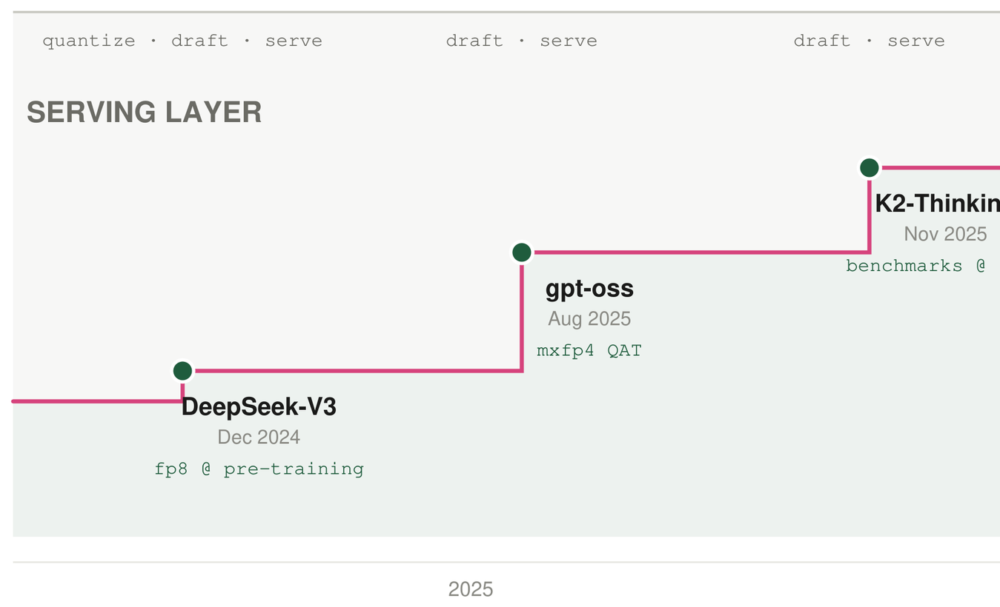
看图A3。从2025到2026，每一级台阶都显示前沿实验室占有了更多推理加速的空间。这份工作原本属于服务层：推理服务商拿到发布的FP8权重，做量化，在上面训练一个草稿模型，再放到OpenRouter上服务大众。这意味着质量评测的责任在推理层。而现在实验室自己做这件事，并在模型发布前完成验证，留给推理层的空间因此变小（LosslessBench，lilyzh.ng/writing/losslessbench）。
这次归属权的转移恰好补上了缺失的质量验证：实验室在交付之前就验证了加速后的模型，第2节描述的缺口因此被合上。
● 接受长度 τ： 目标模型每检查一批草稿时平均接受的草稿token数，包含它自己额外生成的那一个。
● 接受率 α： 提出的草稿token通过目标模型检查的频率。草稿与目标越一致，接受率越高。
● 接受阈值： 服务引擎控制草稿token检查严格程度的一项设置。等于1.0时检查是精确的，调低会有更多草稿token通过。
● 自回归解码： 一次生成一个token，每个token都依赖前一个。
● 块扩散： 一次预测一整块被遮蔽的token，而不是一次一个。
● 奖励token： 目标模型每次检查草稿时自己额外生成的那一个token。
● 草稿模型： 更便宜的模型或草稿层，用于提出若干个可能的下一个token。
● 前向传播： 让模型在当前输入上跑一次，得到各个候选下一token的分数。
● 贪心解码： 永远选概率最高的下一个token，因此同一个提示词总是给出同样的输出。
● KV缓存： 存放先前token注意力信息的缓存，让模型不必重算整个上下文。
● 无损： 模型输出的分布与未加速版本完全一致。
● MASK token： 草稿块里的占位槽，模型会用一个预测出来的token填上它。
● 概率分布： 模型在所有可能的下一token上的概率。
● 量化： 用更少的比特存储模型权重，让推理更快更便宜，有时会损失精度。
● 拒绝采样： 接受或替换草稿token的方法，使最终输出仍然服从目标模型的分布。
● 投机解码： 用快速的较小草稿模型提出若干token，再由更大更慢的目标模型校验的一种生成方法。
● 目标模型： 我们想要保留其输出分布的、更大的那个模型。
● 温度： 控制采样随机程度的设置。温度为0时模型总是选它的首选，温度为1时按自身的随机性采样。
● 总变差距离： 衡量两组概率差异程度的度量。草稿猜得越接近目标，被接受的token越多。
● 原始模型： 不做任何加速直接运行的目标模型，用作速度基线。
读接受率。 2023年那篇论文（Leviathan等，定理3.5）给出：接受率等于1减去草稿分布与目标分布之间的总变差距离。
α = 1 − E[D(p, q)]这里的p和q分别是目标模型和草稿模型的下一个token分布，D(p, q) 是两者之间的总变差距离。同一套分析也从接受率推出了表1里定义的接受长度 τ：
τ = (1 − α^(γ+1)) / (1 − α)其中 γ 是每个校验周期里草稿token的数量。
2023年之后的工作都继承了这条定理。后续论文不再重复验证无损性：只要校验仍然遵守上面那条接受或重采样的规则，无论草稿多弱，输出都是无损的。定理3.5真正增加的是一种读速度数字的方式：报告的 τ 给出接受率 α，而 α 是1减去一个分布距离，所以读 τ 就等于读草稿分布离目标分布有多近。在严格校验下，这个距离只决定速度；一旦接受阈值被放宽，这个距离就会影响输出质量。
在单张B200上用SGLang服务Qwen3-8B，原始解码大约每秒230个token；《哈利·波特》第一部约10万个token，全部解码要七分多钟。换成DFlash草稿模型后，对话类文本的解码速度提升约2.75倍（Chen等，2026，arxiv.org/abs/2602.06036），约每秒630个token，时间压到三分钟以内。
下面按指标算一遍，看这套配置如何得到2.3倍的解码加速：
T(verify) = 4.3 ms # one target forward pass (Qwen3-8B at 230 tok/s ≈ 4.3 ms/token)
T(draft) = 1.3 ms # drafting cost
τ = 3 tokens # accepted per verification pass
L = (1.3 ms + 4.3 ms) / 3 ≈ 1.9 ms per token # per-token latency
η = 4.3 ms / 1.9 ms ≈ 2.3x # speedup: 2.3x总结起来，投机解码的速度取决于三个因素：草拟时间、校验时间、接受长度。 接下来看四代架构如何依次改进这三个决定因素。
参考：https://neurips2026-speculative-decoding.vercel.app/